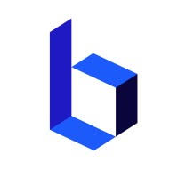
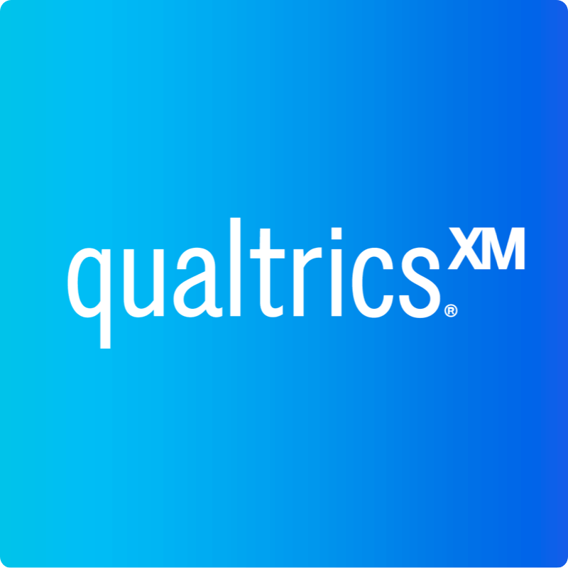

// experience
Where I've worked

Technology Consultant
2026 — Present
Deloitte · Geneva
- Advising clients on technology strategy, digital transformation, and data-driven decision making.
- Combining analytical depth with structured consulting methodologies to deliver measurable outcomes.

Financial Data & Systems Analyst
Apr 2025 — Sep 2025
Bluekern (Startup) · Geneva
- Rebuilt all in-app financial visualisations in JavaScript across 4 client instances, improving reporting clarity for real estate investors across Europe.
- Extended platform functionality with new financial metrics — IRR, NAV, cash flow, portfolio performance — integrated into existing reporting modules.
- Restructured platform navigation and UI, reducing friction and improving end-user adoption.
- Translated client feedback into iterative improvements within agile delivery cycles.

Technology Consultant
Jul 2024 — Apr 2025
Qualtrics · Dublin
- Delivered end-to-end analytics solutions for 15+ clients across retail, automotive, public sector, and F&B — managing 5–6 concurrent projects across EMEA, NA, PAC, MENA, and CEE.
- Built a global data export and validation framework for a multinational F&B client (10,000+ users), enabling regional teams to independently verify performance data.
- Designed customer satisfaction dashboards with multi-source integrations for a major automotive group, standardising issue tracking across maintenance workflows.
- Partnered daily with senior stakeholders to translate business requirements into scalable technical solutions.
Product Specialist — Integrations & API Lead
Aug 2023 — Jul 2024
Qualtrics · Dublin
- Resolved an average of 20 technical cases per day — 43% above the team target of 14 — consistently ranked top performer across EMEA.
- Promoted to lead the Integrations & API team, managing and mentoring 4 specialists on third-party integrations, REST APIs, and custom implementations.
- Automated ticket allocation and inbox management via API integrations, eliminating manual distribution and improving team response efficiency.
- Delivered multilingual support across English, French, and Spanish for enterprise clients internationally.
// education
2022 — 2023
MSc Business Analytics
with Honours
with Honours
Trinity College Dublin
Data mining · Forecasting · Visualisation · Modelling
Capstone projects in marketing, finance & operations
Capstone projects in marketing, finance & operations
2019 — 2022
BSc Economics
GPA 5.1 / 6
GPA 5.1 / 6
University of Geneva
Statistics · Econometrics · Data Science · Numerical Methods
Final project: R Shiny data application (published)
Final project: R Shiny data application (published)